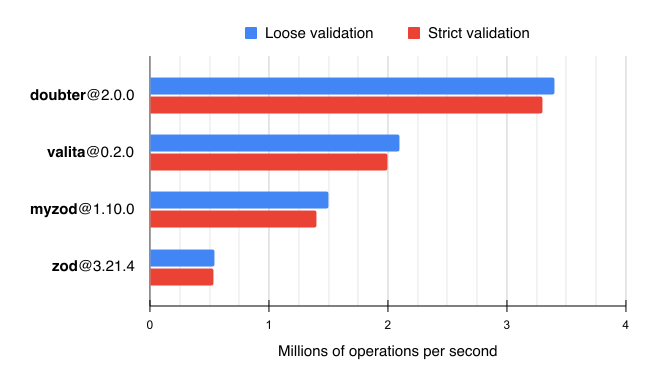

No-hassle runtime validation and transformation library.
üî• Try Doubter on CodeSandbox
npm install --save-prod doubter
Core features
DatePromiseMapSetStrings
string
Symbols
symbol
Objects
object
record
instanceOf
Dates
date
Promises
promise
Shape composition
union
or
intersection
and
Let's create a simple shape of a user object:
import * as d from 'doubter';
const userShape = d.object({
name: d.string(),
age: d.int().gte(18).lt(100)
});
// ⮕ Shape<{ name: string, age: number }>
This shape can be used to validate a value:
userShape.parse({
name: 'John Belushi',
age: 30
});
// ⮕ { name: 'John Belushi', age: 30 }
If an incorrect value is provided, a validation error is thrown:
userShape.parse({
name: 'Peter Parker',
age: 17
});
// ❌ ValidationError: numberGreaterThanOrEqual at /age: Must be greater than or equal to 18
Infer user type from the shape:
type User = typeof userShape['output'];
const user: User = {
name: 'Dan Aykroyd',
age: 27
};
Shapes are validation and transformation pipelines that have an input and an output. Here's a shape that restricts an input to a string and produces a string as an output:
d.string();
// ⮕ Shape<string>
Shapes can have different input and output types. For example, the shape below allows strings and
replaces undefined input values with a default value "Mars":
const shape = d.string().optional('Mars');
// ⮕ Shape<string | undefined, string>
shape.parse('Pluto');
// ⮕ 'Pluto'
shape.parse(undefined);
// ⮕ 'Mars'
Infer the input and output types of the shape:
type ShapeInput = typeof shape['input'];
// ⮕ string | undefined
type ShapeOutput = typeof shape['output'];
// ⮕ string
Transformations and reliance on promise shapes make your shapes async.
Here's a shape of a promise that is expected to be fulfilled with a number:
const asyncShape = d.promise(d.number());
// ⮕ Shape<Promise<number>>
You can check that the shape is async:
asyncShape.async // ⮕ true
Async shapes don't support synchronous parse method, and would throw an error if it is called:
asyncShape.parse(Promise.resolve(42));
// ❌ Error: Shape is async
Use parseAsync with async shapes instead:
asyncShape.parseAsync(Promise.resolve(42));
// ⮕ Promise<42>
Any shape that relies on an async shape becomes async as well:
const objectShape = d.object({
foo: asyncShape
});
// ⮕ Shape<{ foo: Promise<number> }>
objectShape.async // ⮕ true
Each shape can parse input values and there are several methods for that purpose.
Methods listed in this section can be safely detached from the shape instance:
const { parseOrDefault } = d.string();
parseOrDefault('Jill');
// ⮕ 'Jill'
parseOrDefault(42);
// ⮕ undefined
parseYou're already familiar with parse that takes an input value and returns an output value, or throws a validation error
is parsing fails:
const shape = d.number();
// ⮕ Shape<number>
shape.parse(42);
// ⮕ 42
shape.parse('Mars');
// ❌ ValidationError: type at /: Must be a number
Use parseAsync with async shapes. It has the same semantics and returns a promise.
parseOrDefaultSometimes you don't care about validation errors, and want a default value to be returned if things go south:
const shape = d.number();
// ⮕ Shape<number>
shape.parseOrDefault(42);
// ⮕ 42
shape.parseOrDefault('Mars');
// ⮕ undefined
shape.parseOrDefault('Pluto', 5.3361);
// ⮕ 5.3361
If you need a fallback value for a nested shape consider using catch.
Use parseOrDefaultAsync with async shapes. It has the same semantics and returns a promise.
tryIt isn't always convenient to write a try-catch blocks to handle validation errors. Use try method in such cases:
const shape = d.number();
// ⮕ Shape<number>
shape.try(42);
// ⮕ { ok: true, value: 42 }
shape.try('Mars');
// ⮕ { ok: false, issues: [{ code: 'type', … }] }
Use tryAsync with async shapes. It has the same semantics and returns a promise.
Validation errors which are thrown by the parse* methods, and
Err objects returned by the try* methods have the
issues property which holds an array of validation issues:
const shape = d.object({ age: d.number() });
// ⮕ Shape<{ age: number }>
const result = shape.try({ age: 'Seventeen' });
The result contains the Err object:
{
ok: false,
issues: [
{
code: 'type',
path: ['age'],
input: 'Seventeen',
message: 'Must be a number',
param: 'number',
meta: undefied
}
]
}
codeIs the code of the validation issue. Shapes provide various checks and each check has a unique code.
In the example above, type code refers to a failed number type check. See the table of known codes below. You can
add a custom check to any shape and return an issue with your custom code.
pathIs the object path, represented as an array that may contain strings, numbers (array indices and such), symbols, and
any other values (since they can be Map keys).
inputIs the input value that caused a validation issue. Note that if coercion is enabled this contains a coerced value.
messageIs the human-readable issue message. Refer to Localization section for more details.
paramIs the parameter value associated with the issue. Parameter value usually depends on code, see the table below.
metaIs the optional metadata associated with the issue. Refer to Metadata section for more details.
| Code | Caused by | Param |
|---|---|---|
arrayMinLength |
d.array().min(n) |
The minimum array length n |
arrayMaxLength |
d.array().max(n) |
The maximum array length n |
const |
d.const(x) |
The expected constant value x |
enum |
d.enum([x, y, z]) |
The list of unique expected values[x, y, z] |
exclusion |
shape.exclude(x) |
The excluded value x |
instance |
instanceOf(Class) |
The class constructor Class |
intersection |
d.and(…) |
— |
json |
d.json() |
The message from JSON.parse() |
predicate |
shape.refine(…) |
The callback passed to refine |
numberInteger |
d.integer() |
— |
numberFinite |
d.finite() |
— |
numberGreaterThan |
d.number().gt(x) |
The exclusive minimum value x |
numberGreaterThanOrEqual |
d.number().gte(x) |
The minimum value x |
numberLessThan |
d.number().lt(x) |
The exclusive maximum value x |
numberLessThanOrEqual |
d.number().lte(x) |
The maximum value x |
numberMultipleOf |
d.number().multipleOf(x) |
The divisor x |
setMinSize |
d.set().min(n) |
The minimum Set size n |
setMaxSize |
d.set().max(n) |
The maximum Set size n |
stringMinLength |
d.string().min(n) |
The minimum string length n |
stringMaxLength |
d.string().max(n) |
The maximum string length n |
stringRegex |
d.string().regex(re) |
The regular expression re |
type |
All shapes | The expected input value type ✱ |
tuple |
d.tuple([…]) |
The expected tuple length |
union |
d.or(…) |
The array of expected input value types ✱ |
unknownKeys |
d.object().exact() |
The array of unknown keys |
✱ The list of known value types:
arraybigintbooleandatefunctionobjectmapnevernullnumberpromisesetstringsymbolundefinedChecks allow constraining the input value beyond type assertions. For example, if you want to constrain an input number to be greater than 5:
const shape1 = d.number().check(value => {
if (value <= 5) {
// üü° Return a partial issue
return { code: 'kaputs' };
}
});
// ⮕ Shape<number>
shape1.parse(10);
// ⮕ 10
shape1.parse(3);
// ❌ ValidationError: kaputs at /
A check callback receives the shape output value and must return a partial issue or an array of partial issues if the value is invalid.
Note Check callbacks can safely throw a
ValidationErrorto notify Doubter that parsing issues occurred. While this has the same effect as returning an array of issues, it is recommended to throw aValidationErroras the last resort since catching errors has a high performance penalty.
If value is valid, a check callback must return null or undefined.
Most shapes have a set of built-in checks. The check we've just implemented above is called gt (greater than):
d.number().gt(5);
Add as many checks as you need to the shape. They are executed the same order they are defined.
d.string().max(4).regex(/a/).try('Pluto');
In the example above, an Err object is returned:
{
ok: false,
issues: [
{
code: 'stringMaxLength',
path: [],
input: 'Pluto',
message: 'Must have the maximum length of 4',
param: 4,
meta: undefied
}
]
}
Note You can find the list of issue codes and corresponding param values in Validation errors section.
Doubter halts parsing and raises a validation error as soon as the first issue was encountered. Sometimes you may want
to collect all issues that prevent input from being successfully parsed. To do this, pass a verbose option to a parse
method.
d.string().max(4).regex(/a/).try('Pluto', { verbose: true });
This would return the Err object with two issues:
{
ok: false,
issues: [
{
code: 'stringMaxLength',
path: [],
input: 'Pluto',
message: 'Must have the maximum length of 4',
param: 4,
meta: undefied
},
{
code: 'stringRegex',
path: [],
input: 'Pluto',
message: 'Must match the pattern /a/',
param: /a/,
meta: undefied
}
]
}
Checks that you add using a check method are marked as "safe" which means they aren't executed if any of the preceding
checks failed. Consider an object with a custom check:
const userShape = d.object({
age: d.number(),
yearsOfExperience: d.number()
}).check(value => {
if (value.age < value.yearsOfExperience) {
return { code: 'inconsistentAge' };
}
});
// ⮕ Shape<{ age: number, yearsOfExperience: number }>
The check callback relies on value to be an object with the valid set of properties. So if any issues are detected in
the input object the check won't be called:
// Check isn't called since yearsOfExperience isn't a number
nameShape.parse({ age: 18 });
To force the check to be executed even if the preceding check has failed, pass the unsafe option to the check method:
const shape = d.string().max(3).check(
value => {
if (value.toUpperCase() !== value) {
return { message: 'Must be all caps' }
}
},
{ unsafe: true }
);
shape.parse('Pluto', { verbose: true });
// ❌ ValidationError
Let's consider the same check being added to the shape twice:
const emailCheck: d.CheckCallback = (value, options) => {
if (!value.includes('@')) {
return { code: 'email' };
}
};
const shape = d.string().check(emailCheck).check(emailCheck);
// ⮕ Shape<string>
emailCheck check would be added to the shape only once, because Doubter makes checks to be distinct.
You can later delete a check you've added:
shape.deleteCheck(emailCheck);
// ⮕ Shape<string>
Using a check callback as an identity isn't always convenient, so you can pass a key option:
shape.check(emailCheck, { key: 'okay' });
// ⮕ Shape<string>
Now you should use this key to delete the check:
shape.deleteCheck('okay');
// ⮕ Shape<string>
You can retrieve a check by its key. If key option was omitted, the check callback identity is used as a key:
shape.check(emailCheck);
shape.getCheck(emailCheck);
// ⮕ { callback: emailCheck, unsafe: false, param: undefined }
Built-in checks have the meta option. Its value is later assigned to the meta property of the raised
validation issue.
const shape = d.number().gt(5, { meta: 'Useful data' });
// ⮕ Shape<number>
const result = shape.try(2);
// ⮕ { ok: false, issues: … }
if (!result.ok) {
result.issues[0].meta // ⮕ 'Useful data'
}
This comes handy if you want to enhance an issue with an additional data that can be used later during issues processing. For example, during localization.
Refinements are a simplified checks that use a predicate to validate an input. For example, the shape below would raise an issue if the input string is less than three characters long.
d.string().refine(value => value.length >= 3);
// ⮕ Shape<string>
Use refinements to narrow the output type of the shape:
function isMarsOrPluto(value: string): 'Mars' | 'Pluto' {
return value === 'Mars' || value === 'Pluto';
}
d.string().refine(isMarsOrPluto)
// ⮕ Shape<string, 'Mars' | 'Pluto'>
Along with validation, shapes can transform values. Let's consider a shape that takes a string as an input and converts it to number:
const shape = d.string().transform(parseFloat);
// ⮕ Shape<string, number>
This shape ensures that the input value is a string and passes it to a transformation callback:
shape.parse('42');
// ⮕ 42
shape.parse('Seventeen');
// ⮕ NaN
Throw a ValidationError inside the transformation callback to notify parser that transformation cannot be successfully
completed:
function toNumber(input: string): number {
const output = parseFloat(input);
if (isNaN(output)) {
throw new d.ValidationError([{ code: 'kaputs' }]);
}
return output;
}
const shape = d.string().transform(toNumber);
shape.parse('42');
// ⮕ 42
shape.parse('Seventeen');
// ❌ ValidationError: kaputs at /
Let's consider a sync transformation:
const syncShape1 = d.string().transform(
value => 'Hello, ' + value
);
// ⮕ Shape<string>
syncShape1.async // ⮕ false
syncShape1.parse('Jill');
// ⮕ 'Hello, Jill'
The transformation callback receives and returns a string and so does syncShape1.
Now lets return a promise from the transformation callback:
const syncShape2 = d.string().transform(
value => Promise.resolve('Hello, ' + value)
);
// ⮕ Shape<string, Promise<string>>
syncShape2.async // ⮕ false
syncShape2.parse('Jill');
// ⮕ Promise<string>
Notice that syncShape2 is asymmetric: it expects a string input and transforms it to a Promise<string>. syncShape2
is still sync, since the transformation callback synchronously wraps a value in a promise.
Now let's create an async shape using the async transformation:
const asyncShape1 = d.string().transformAsync(
value => Promise.resolve('Hello, ' + value)
);
// ⮕ Shape<string>
// üü° Notice that the shape is async
asyncShape1.async // ⮕ true
await asyncShape1.parseAsync('Jill');
// ⮕ 'Hello, Jill'
Notice that asyncShape1 still transforms the input string value to output string but the transformation itself is
async.
A shape is async if it uses async transformations. Here's an async object shape:
const asyncShape2 = d.object({
foo: d.string().transformAsync(
value => Promise.resolve(value)
)
});
// ⮕ Shape<{ foo: string }>
asyncShape2.async // ⮕ true
Note Composite shapes are async if they rely on a
promiseshape:const shape = d.object({
foo: d.promise(d.string())
});
// ⮕ Shape<{ foo: Promise<string> }>
shape.async // ⮕ true
Inside check and transform callbacks you can access options passed to the parser. The
context option may store arbitrary data, which is undefined by default.
The example below shows how you can transform numbers to formatted strings using context:
const shape = d.number().transform(
(value, options) => new Intl.NumberFormat(options.context.locale).format(value)
);
// ⮕ Shape<number, string>
shape.parse(
1000,
{
// üü° Pass a context
context: { locale: 'en-US' }
}
);
// ⮕ '1,000'
With shape piping you to can pass the shape output to another shape.
const shape1 = d.string().transform(parseFloat);
// ⮕ Shape<string, number>
shape1.to(number().lt(5).gt(10));
// ⮕ Shape<string, number>
Piping is particularly useful in conjunction with transformations and JSON shape. The example below shows how you can parse input JSON string and ensure that the output is an object:
const shape2 = d.json().to(
d.object({ foo: d.bigint() }).coerce()
);
shape2.parse('{"foo":"6889063"}');
// ⮕ { foo: BigInt(6889063) }
Consider the enum shape:
const shape1 = d.enum(['Mars', 'Pluto', 'Jupiter']);
// ⮕ Shape<'Mars' | 'Pluto' | 'Jupiter'>
To exclude a value from this enum you can use exclude:
shape1.exclude('Pluto');
// ⮕ Shape<'Mars' | 'Jupiter'>
Value exclusion works with any shape. For example, you can exclude a number:
const shape2 = d.number().exclude(42);
// ⮕ Shape<number>
shape2.parse(33);
// ⮕ 33
shape2.parse(42);
// ❌ ValidationError: exclusion at /: Must not be equal to 42
Exclude prohibits value for both input and output:
const shape3 = d.number().transform(value => value * 2).exclude(42);
// ⮕ Shape<number>
shape3.parse(21);
// ❌ ValidationError: exclusion at /: Must not be equal to 42
You can add a value to a multitude of input values:
d.const('Mars').include('Pluto');
// ⮕ Shape<'Mars' | 'Pluto'>
Included values don't go through checks and transformations of the underlying shape:
const shape = d.number().gt(3).include('Seventeen');
// ⮕ Shape<number | 'Seventeen'>
shape.parse(2);
// ❌ ValidationError: numberGreaterThan at /: Must be greater than 3
shape.parse(100);
// ⮕ Shape<100>
// üü° Notice that parsed value doesn't satisfy the number type and gt constraints
shape.parse('Seventeen');
// ⮕ 'Seventeen'
Include a value as an input and replace it with another value on the output side:
const shape = d.const('Mars').replace('Pluto', 'Jupiter');
// ⮕ Shape<'Mars' | 'Pluto', 'Mars' | 'Jupiter'>
shape.parse('Mars');
// ⮕ 'Mars'
shape.parse('Pluto');
// ⮕ 'Jupiter'
Note that replace treats passed values as literals but in TypeScript type system not all values can be literals. For
example, there's no literal type for NaN which may cause unexpected result:
// üî¥ Note that the shape output is unexpectedly typed as 0
d.number().replace(NaN, 0);
// ⮕ Shape<number, 0>
Why is output inferred as 0 and not as a number? This occurs because typeof NaN is number and it is excluded from
the output type of the shape. For this particular case use nan method of number shape:
// üü° Note that the shape output is a number
const shape = d.number().nan(0);
// ⮕ Shape<number>
shape.parse(NaN);
// ⮕ 0
Marking a shape as optional allows undefined in both its input and output:
d.string().optional();
// ⮕ Shape<string | undefined>
You can provide a default value of any type, so it would be used as an output if input value is undefined:
d.string().optional(42);
// ⮕ Shape<string | undefined, string | 42>
You can achieve the same behaviour as optional using a union:
d.or([
d.string(),
d.undefined()
]);
// ⮕ Shape<string | undefined>
Or using an inclusion:
d.string().include(undefined);
// ⮕ Shape<string | undefined>
You can mark any shape as non-optional which effectively excludes undefined values from both input and
output. For example, lets consider a union of an optional string and a number:
const shape1 = d.or([
d.string().optional(),
d.number()
]);
// ⮕ Shape<string | undefined | number>
shape1.parse(undefined);
// ⮕ undefined
Now let's mark this shape as non-optional:
const shape2 = shape1.nonOptional();
// ⮕ Shape<string | number>
shape2.parse(undefined);
// ❌ ValidationError: exclusion at /: Must not be equal to undefined
Marking a shape as nullable allows null for both input and output:
d.string().nullable();
// ⮕ Shape<string | null>
You can provide a default value, so it would be used as an output if input value is null:
d.string().nullable(42);
// ⮕ Shape<string | null, string | 42>
To allow both null and undefined values use nullish:
d.string().nullish();
// ⮕ Shape<string | null | undefined>
nullish also supports the default value:
d.string().nullish(8080);
// ⮕ Shape<string | null | undefined, string | 8080>
All object-like shapes (objects, arrays, maps, sets, promises, etc.) can be converted to a deep partial alternative
using deepPartial method:
const shape1 = d.array(
d.object({
name: d.string(),
age: d.number()
})
);
// ⮕ Shape<{ name: string, age: number }[]>
shape1.deepPartial();
// ⮕ Shape<Array<{ name?: string, age?: number } | undefined>>
Unions, intersections and lazy shapes can also be converted to deep partial:
const shape2 = d.or([
d.number(),
d.object({ name: d.string() })
]).deepPartial()
// ⮕ Shape<number | { name?: string }>
shape2.parse(42);
// ⮕ 42
shape2.parse({ name: undefined });
// ⮕ { name: undefined }
shape2.parse({ name: 'Frodo' });
// ⮕ { name: 'Frodo' }
shape2.parse({ name: 8080 });
// ❌ ValidationError: type at /name: Must be a string
Deep partial isn't applied to transformed shapes:
const shape2 = d.object({
years: d.array(d.string()).transform(parseFloat)
}).deepPartial();
// ⮕ Shape<{ years?: string[] }, { years?: number[] }>
If issues were detected during parsing a shape can return a fallback value.
const shape1 = d.string().catch('Mars');
shape1.parse('Pluto');
// ⮕ 'Pluto'
shape1.parse(42);
// ⮕ 'Mars'
Pass a callback as a fallback value, it would be executed every time the catch clause is reached:
const shape2 = d.number().catch(Date.now);
shape2.parse(42)
// ⮕ 42
shape2.parse('Pluto');
// ⮕ 1671565311528
shape2.parse('Mars');
// ⮕ 1671565326707
TypeScript's type system is structural, which means that any two types that are structurally equivalent are considered the same.
interface Cat {
name: string;
}
interface Dog {
name: string;
}
declare function petCat(cat: Cat): void;
const fidoDog: Dog = {
name: 'Fido'
};
petCat(fidoDog);
// ✅ Ok yet types are different
In some cases, its can be desirable to simulate nominal typing inside TypeScript. For instance, you may wish to write a function that only accepts an input that has been validated by Doubter. This can be achieved with branded types:
const catShape = d.object({ name: d.string() }).brand<'Cat'>();
type Cat = typeof catShape['input'];
declare function petCat(cat: Cat): void;
petCat(catShape.parse({ name: 'Simba' }));
// ✅ Ok, since the cat was validated
petCat({ name: 'Fido' });
// ❌ Error: Expected BRAND to be Cat
Under the hood, this works by attaching a "brand" to the inferred type using an intersection type. This way, plain/unbranded data structures are no longer assignable to the inferred type of the shape.
Note that branded types do not affect the runtime result of parse. It is a static-only construct.
Object, array, union ond other shapes provide access to their nested shapes:
const objectShape = d.object({
name: d.string(),
age: d.number()
});
// ⮕ Shape<{ name: string, age: number }>
objectShape.shapes.name // ⮕ Shape<number>
const unionShape = d.or([d.string(), objectShape]);
// ⮕ Shape<string | { name: string, age: number }>
unionShape.shapes[1] // ⮕ objectShape
at method derives a sub-shape at the given key, and if there's no key null is returned:
objectShape.at('age');
// ⮕ Shape<number>
objectShape.at('unknownKey');
// ⮕ null
This is especially useful with composite shapes:
const shape = d.or([
d.object({
foo: d.string()
}),
d.object({
foo: d.number()
})
]);
shape.at('foo')
// ⮕ Shape<string | number>
shape.at('bar')
// ⮕ null
All shape factories and built-in checks support custom issue messages:
d.string('Hey, string here').min(3, 'Too short');
Checks that have a param, such as min constraint in the example above, can use a %s placeholder that would be
interpolated with the param value.
d.string().min(3, 'Minimum length is %s');
Pass a function as a message, and it would receive a check param, an issue code, an input value, a metadata, and parsing options and should return a formatted message value. The returned formatted message can be of any type.
For example, when using with React you may return a JSX element:
const gtMessage: d.Message = (param, code, input, meta, options) => (
<span style={{ color: 'red' }}>
Minimum length is {param}
</span>
);
d.number().gt(5, gtMessage);
All rules described above are applied to the message option as well:
d.string().length(3, { message: 'Expected length is %s' })
How to validate an email or UUID? Combine Doubter with your favourite predicate library:
import * as d from 'doubter';
import isEmail from 'validator/lib/isEmail';
const emailShape = d.any<string>(isEmail, 'Must be an email');
// ⮕ Shape<string>
emailShape.parse('Not an email');
// ❌ ValidationError: predicate at /: Must be an email
emailShape.getCheck(isEmail);
// ⮕ { key: isEmail, … }
Returns a function which parses arguments using provided shapes:
const callback = d.guard([d.string(), d.boolean()], (arg1, arg2) => {
// arg1 is string
// arg2 is boolean
});
Or check all arguments with a shape that parses arrays:
const callback = d.guard(d.array(d.string()), (...args) => {
// args is string[]
});
Or if you have a single non-array argument, you can pass its shape:
const callback = d.guard(d.string(), arg => {
// arg is string
});
To guard multiple functions omit the callback parameter and a factory function would be returned:
const callbackFactory = d.guard(d.string());
const callback = callbackFactory(arg => {
// arg is string
});
If you are want to use async shapes to parse arguments, use guardAsync which has the same signatures as guard.
Type coercion is the process of converting value from one type to another (such as string to number, array to Set,
and so on).
When coercion is enabled, input values are implicitly converted to the required input type whenever possible. For example, you can coerce input values to string type:
const shape1 = d.string().coerce();
shape1.parse([8080]);
// ⮕ '8080'
shape1.parse(null);
// ⮕ ''
Coercion can be enabled on shape-by-shape basis (as shown in the example above), or it can be enabled for all shapes
when coerced option is passed to a parsing method:
const shape2 = d.object({
name: d.string(),
birthday: d.date()
});
shape2.parse(
{
name: ['Jake'],
birthday: '1949-01-24'
},
{ coerced: true }
);
// ⮕ { name: 'Jake', birthday: new Date(-660700800000) }
Coercion rules differ from JavaScript so the behavior is more predictable and human-like.
null and undefined are converted to an empty string:
const shape = d.string().coerce();
shape.parse(null);
// ⮕ ''
Finite numbers, boolean and bigint values are converted via String(value):
shape.parse(BigInt(2398955));
// ⮕ '2398955'
shape.parse(8080);
// ⮕ '8080'
shape.parse(-Infinity);
// ❌ ValidationError: type at /: Must be a string
Valid dates are converted to an ISO formatted string:
shape.parse(new Date(1674352106419));
// ⮕ '2023-01-22T01:48:26.419Z'
shape.parse(new Date(NaN));
// ❌ ValidationError: type at /: Must be a string
Arrays with a single element are unwrapped and the value is coerced:
shape.parse([undefined]);
// ⮕ ''
shape.parse(['Jill', 'Sarah']);
// ❌ ValidationError: type at /: Must be a string
null and undefined values are converted to 0:
const shape = d.number().coerce();
shape.parse(null);
// ⮕ 0
Strings, boolean values and Date objects are converted using +value:
shape.parse('42');
// ⮕ 42
shape.parse('Seventeen');
// ❌ ValidationError: type at /: Must be a number
Arrays with a single element are unwrapped and the value is coerced:
shape.parse([new Date('2023-01-22')]);
// ⮕ 1674345600000
shape.parse([1997, 1998]);
// ❌ ValidationError: type at /: Must be a number
null, undefined, 'false' and 0 are converted to false:
const shape = d.boolean().coerce();
shape.parse(null);
// ⮕ false
'true' and 1 are converted to true:
shape.parse('true');
// ⮕ true
shape.parse('yes');
// ❌ ValidationError: type at /: Must be a boolean
Arrays with a single element are unwrapped and the value is coerced:
shape.parse([undefined]);
// ⮕ false
shape.parse([0, 1]);
// ❌ ValidationError: type at /: Must be a boolean
null and undefined are converted to 0:
const shape = d.bigint().coerce();
shape.parse(null);
// ⮕ BigInt(0)
Number, string and boolean values are converted via BigInt(value):
shape.parse('18588');
// ⮕ BigInt(18588)
shape.parse('Unexpected')
// ❌ ValidationError: type at /: Must be a bigint
Arrays with a single element are unwrapped and the value is coerced:
shape.parse([0xdea]);
// ⮕ BigInt(3562)
shape.parse([BigInt(1), BigInt(2)]);
// ❌ ValidationError: type at /: Must be a bigint
If an enum is defined via a native TypeScript enum or via a const object, then enum element names are coerced to corresponding values:
enum Users {
JILL,
SARAH,
JAMES
}
const shape = d.enum(Users).coerce();
shape.parse('SARAH');
// ⮕ 1
Arrays with a single element are unwrapped and the value is coerced:
shape.parse(['JAMES']);
// ⮕ 2
shape.parse([1]);
// ⮕ 1
shape.parse([1, 2]);
// ❌ ValidationError: enum at /: Must be equal to one of 0,1,2
Iterables and array-like objects are converted to array via Array.from(value):
const shape = d.array(d.string()).coerce();
shape.parse(new Set(['John', 'Jack']));
// ⮕ ['John', 'Jack']
shape.parse({ 0: 'Bill', 1: 'Jill', length: 2 });
// ⮕ ['Bill', 'Jill']
Scalars, non-iterable and non-array-like objects are wrapped into an array:
shape.parse('Rose');
// ⮕ ['Rose']
DateStrings and numbers are converted via new Date(value) and if an invalid date is produced then an issue is raised:
const shape = d.date().coerce();
shape.parse('2023-01-22');
// ⮕ Date
shape.parse('Yesterday');
// ❌ ValidationError: type at /: Must be a Date
Arrays with a single element are unwrapped and the value is coerced:
shape.parse([1674352106419]);
// ⮕ Date
shape.parse(['2021-12-03', '2023-01-22']);
// ❌ ValidationError: type at /: Must be a Date
PromiseAll values are converted to a promise by wrapping it in Promise.resolve():
const shape = d.promise(d.number()).coerce();
shape.parseAsync(42);
// ⮕ Promise<number>
MapArrays, iterables and array-like objects that withhold entry-like elements (a tuple with two elements) are converted to
Map entries via Array.from(value):
const shape = d.map(d.string(), d.number()).coerce();
shape.parse([
['Mars', 0.1199],
['Pluto', 5.3361]
]);
// ⮕ Map { 'Mars' → 0.1199, 'Pluto' → 5.3361 }
shape.parse(['Jake', 'Bill']);
// ❌ ValidationError: type at /: Must be a Map
Other objects are converted to an array of entries via new Map(Object.entries(value)):
shape.parse({
Jake: 31,
Jill: 28
});
// ⮕ Map { 'Jake' → 31, 'Jill' → 28 }
SetArrays, iterables and array-like objects converted to Set values via Array.from(value):
const shape = d.set(d.string()).coerce();
shape.parse(['Boris', 'K']);
// ⮕ Set { 'Boris', 'K' }
Scalars, non-iterable and non-array-like objects are wrapped into an array:
shape.parse('J');
// ⮕ Set { 'J' }
Tasty recipes from the chef.
const keyShape = d.enum(['foo', 'bar']).transform(
value => value.toUpperCase() as 'FOO' | 'BAR'
);
// ⮕ Shape<'foo' | 'bar', 'FOO' | 'BAR'>
const shape = d.record(keyShape, d.number());
// ⮕ Shape<Record<'foo' | 'bar', number>, Record<'FOO' | 'BAR', number>>
shape.parse({ foo: 1, bar: 2 });
// ⮕ { FOO: 1, BAR: 2 }
import qs from 'qs';
const queryShape = d.object({
name: d.string().optional(),
age: d.int().gt(0).coerce().catch().optional()
});
// ⮕ Shape<{ name: string | undefined, age: number | undefined }>
queryShape.parse(qs.parse('name=Frodo&age=50'));
// ⮕ { name: 'Frodo', age: 50 }
queryShape.parse(qs.parse('age=-33'));
// ⮕ { age: undefined }
The chart below showcases the performance comparison in terms of millions of operations per second (greater is better). Tests were conducted using TooFast.

Clone this repo and use npm ci && npm run perf to run the performance testsuite.
Validation performance was measured for the following object:
const value = {
a1: [1, 2, 3],
a2: 'foo',
a3: false,
a4: {
a41: 'bar',
a42: 3.1415
}
};
The Doubter shape under test:
const shape = d.object({
a1: d.array(d.int()),
a2: d.string().min(3),
a3: d.boolean(),
a4: d.object({
a41: d.enum(['foo', 'bar']),
a42: d.number()
})
});
üîé API documentation is available here.
anyAn unconstrained value that is inferred as any:
d.any();
// ⮕ Shape<any>
Use any to create shapes that are unconstrained at runtime but constrained at compile time:
d.any<{ foo: string }>();
// ⮕ Shape<{ foo: string }>
Create a shape that is constrained by a narrowing predicate:
d.any((value): value is string => typeof value === 'string');
// ⮕ Shape<any, string>
arrayConstrains a value to be an array:
d.array();
// ⮕ Shape<any[]>
Restrict array element types:
d.array(d.number());
// ⮕ Shape<number[]>
Constrain the length of an array:
d.array(d.string()).min(1).max(10);
Limit both minimum and maximum array length at the same time:
d.array(d.string()).length(5);
Transform array values during parsing:
d.array(d.string().transform(parseFloat));
// ⮕ Shape<string[], number[]>
bigintConstrains a value to be a bigint.
d.bigint();
// ⮕ Shape<bigint>
booleanConstrains a value to be boolean.
d.boolean();
// or
d.bool();
// ⮕ Shape<boolean>
constConstrains a value to be an exact value:
d.const('Mars');
// ⮕ Shape<'Mars'>
There are shortcuts for null, undefined and nan constants.
Consider using enum if you want a value to be one of multiple literal values.
dateConstrains a value to be a valid date.
d.date();
// ⮕ Shape<Date>
enumConstrains a value to be equal to one of predefined values:
d.enum(['Mars', 'Pluto', 'Jupiter']);
// ⮕ Shape<'Mars', 'Pluto', 'Jupiter'>
Or use a native TypeScript enum to limit possible values:
enum Planet {
MARS,
PLUTO,
JUPITER
}
d.enum(Planet);
// ⮕ Shape<Planet>
Or use
an object with a const assertion:
const planets = {
MARS: 'Mars',
PLUTO: 'Pluto',
JUPITER: 'Jupiter'
} as const;
d.enum(plants);
// ⮕ Shape<'Mars', 'Pluto', 'Jupiter'>
finiteConstrains a value to be a finite number.
d.finite();
// ⮕ Shape<number>
instanceOfConstrains a value to be an object that is an instance of a class:
class User {
name?: string;
}
d.instanceOf(User);
// ⮕ Shape<User>
integerConstrains a value to be an integer.
d.integer().min(5);
// ⮕ Shape<number>
d.int().max(5);
// ⮕ Shape<number>
This is a shortcut for number shape declaration:
d.number().integer();
// ⮕ Shape<number>
Integers follow number type coercion rules.
intersectionCreates a shape that checks that the input value conforms to all shapes.
d.intersection([
d.object({
name: d.string()
}),
d.object({
age: d.number()
})
]);
// ⮕ Shape<{ name: string } & { age: number }>
Or use a shorter alias and:
d.and([
d.array(d.string()),
d.array(d.enum(['Peter', 'Paul']))
]);
// ⮕ Shape<string[] & Array<'Peter' | 'Paul'>>
When working with objects, extend objects instead of intersecting them whenever possible, since object shapes are more performant than object intersection shapes.
There's a logical difference between extended and intersected objects. Let's consider two shapes that both contain the same key:
const shape1 = d.object({
foo: d.string(),
bar: d.boolean(),
});
const shape2 = d.object({
// üü° Notice that the type of foo property in shape2 differs from shape1.
foo: d.number()
});
When you extend an object properties of the left object are overwritten with properties of the right object:
const shape = shape1.extend(shape2);
// ⮕ Shape<{ foo: number, bar: boolean }>
The intersection requires the input value to conform both shapes at the same time, it's no possible since there are no
values that can satisfy the string | number type. So the type of property foo becomes never and no value would be
able to satisfy the resulting intersection shape.
const shape = d.and([shape1, shape2]);
// ⮕ Shape<{ foo: never, bar: boolean }>
jsonParses input strings as JSON:
d.json();
// ⮕ Shape<string, any>
Works best with shape piping:
const shape = d.json().to(
d.object({
foo: d.number()
})
);
// ⮕ Shape<string, { foo: number }>
shape.parse('{"foo":42}');
// ⮕ { foo: 42 }
lazyWith lazy you can declare recursive shapes. To showcase how to use it, let's create a shape that validates JSON data:
type Json =
| number
| string
| boolean
| null
| Json[]
| { [key: string]: Json };
const jsonShape: d.Shape<Json> = d.lazy(() =>
d.or([
d.number(),
d.string(),
d.boolean(),
d.null(),
d.array(jsonShape),
d.record(jsonShape)
])
);
jsonShape.parse({ name: 'Jill' });
// ⮕ { name: 'Jill' }
jsonShape.parse({ tag: Symbol() });
// ❌ ValidationError: intersection at /tag: Must conform the intersection
Note that the Json type is defined explicitly, because it cannot be inferred from the shape which references itself
directly in its own initializer.
Warning While Doubter supports cyclic types, it doesn't support cyclic data structures. The latter would cause an infinite loop at runtime.
mapConstrains an input to be a Map instance:
d.map(d.string(), d.number());
// ⮕ Shape<Map<string, number>>
nanA shape that requires an input to be equal to NaN:
d.nan();
// ⮕ Shape<number>
If you want to constrain a number and allow NaN values, use number:
d.number().nan();
// ⮕ Shape<number>
neverA shape that always raises a validation issue regardless of an input value:
d.never();
// ⮕ Shape<never>
nullA shape that requires an input to be null:
d.null();
// ⮕ Shape<null>
numberA shape that requires an input to be a number.
d.number();
// ⮕ Shape<number>
Allow NaN input values:
d.number().nan();
// ⮕ Shape<number>
Replace NaN with a default value:
d.number().nan(0).parse(NaN);
// ⮕ 0
Limit the allowed range:
// The number must be greater than 5 and less then of equal to 10
d.number().gt(0.5).lte(2.5)
// ⮕ Shape<number>
Constrain a number to be a multiple of a divisor:
// Number must be divisible by 5 without a remainder
d.number().multipleOf(5);
Constrain the number to be an integer:
d.number().integer();
// or
d.int();
Constrain the number to be a finite to raise an issue if an input value is Infinity or -Infinity:
d.number().finite();
Constrain the number to be an integer:
d.number().integer();
// or
d.int();
The finite and integer assertions are always applied before other checks.
objectConstrains a value to be an object with a set of properties:
d.object({
name: d.string(),
age: d.number()
});
// ⮕ Shape<{ name: string, age: number }>
If the inferred type of the property shape is a union with undefined then the property becomes optional:
d.object({
name: d.string().optional(),
age: d.number()
});
// ⮕ Shape<{ name?: string | undefined, age: number }>
Or you can define optional properties as a union:
d.object({
name: d.or([d.string(), d.undefined()]),
});
// ⮕ Shape<{ name?: string | undefined }>
If the transformation result extends undefined then the output property becomes optional:
d.object({
name: d.string().transform(
value => value !== 'Google' ? value : undefined
),
});
// ⮕ Shape<{ name: string }, { name?: string | undefined }>
Add an index signature to the object type, so all properties that aren't listed explicitly are validated with the rest shape:
const shape = d.object({
foo: d.string(),
bar: d.number()
});
// ⮕ Shape<{ foo: string, bar: number }>
const restShape = d.or([
d.string(),
d.number()
]);
// ⮕ Shape<string | number>
shape.rest(restShape);
// ⮕ Shape<{ foo: string, bar: number, [key: string]: string | number }>
Unlike an index signature in TypeScript, a rest shape is applied only to keys that aren't explicitly specified among object property shapes.
Keys that aren't defined explicitly can be handled in several ways:
Force an object to have only known keys. If an unknown key is met, a validation issue is raised.
d.object({
foo: d.string(),
bar: d.number()
}).exact();
Strip unknown keys, so the object is cloned if an unknown key is met, and only known keys are preserved.
d.object({
foo: d.string(),
bar: d.number()
}).strip();
Derive the new shape and override the strategy for unknown keys:
const shape = d.object({ foo: d.string() }).exact();
// Unknonwn keys are now preserved
shape.preserve();
Picking keys from an object creates the new shape that contains only listed keys:
const shape1 = d.object({
foo: d.string(),
bar: d.number()
});
const shape2 = shape1.pick(['foo']);
// ⮕ Shape<{ foo: string }>
Omitting keys of an object creates the new shape that contains all keys except listed ones:
const shape = d.object({
foo: d.string(),
bar: d.number()
});
shape.omit(['foo']);
// ⮕ Shape<{ bar: number }>
Add new properties to the object shape:
const shape = d.object({
name: d.string()
});
shape.extend({
age: d.number()
});
// ⮕ Shape<{ name: string, age: number }>
Merging object shapes preserves the index signature of the left-hand shape:
const fooShape = d.object({
foo: d.string()
}).rest(d.or([d.string(), d.number()]));
const barShape = d.object({
bar: d.number()
});
fooShape.extend(barShape);
// ⮕ Shape<{ foo: string, bar: number, [key: string]: string | number }>
Object properties are optional if their type extends undefined. Derive an object shape that would have its properties
all marked as optional:
const shape1 = d.object({
foo: d.string(),
bar: d.number()
});
shape1.partial()
// ⮕ Shape<{ foo?: string | undefined, bar?: number | undefined }>
Specify which fields should be marked as optional:
const shape2 = d.object({
foo: d.string(),
bar: d.number()
});
shape2.partial(['foo'])
// ⮕ Shape<{ foo?: string | undefined, bar: number }>
In the same way, properties that are optional can be made required:
const shape3 = d.object({
foo: d.string().optional(),
bar: d.number()
});
shape3.required(['foo'])
// ⮕ Shape<{ foo: string, bar: number }>
Note that required would force the value of both input and output to be non-undefined.
Derive a shape that constrains keys of an object:
const shape = d.object({
name: d.string(),
age: d.number()
});
const keyShape = shape.keyof();
// ⮕ Shape<'name' | 'age'>
promiseA shape that constrains to the resolved value of a Promise.
d.promise(d.string());
// ⮕ Shape<Promise<string>>
Transform the value inside a promise:
const shape = d.promise(
d.string().transform(parseFloat)
);
// ⮕ Shape<Promise<string>, Promise<number>>
symbolA shape that constrains a value to be an arbitrary symbol.
d.symbol();
// ⮕ Shape<symbol>
To constrain an input to an exact symbol, use const:
const TAG = Symbol('tag');
d.const(TAG);
// ⮕ Shape<typeof TAG>
Or use an enum to allow several exact symbols:
const FOO = Symbol('foo');
const BAR = Symbol('bar');
d.enum([FOO, BAR]);
// ⮕ Shape<typeof FOO | typeof BAR>
transformTransforms the input value:
const shape = d.transform(parseFloat);
// ⮕ Shape<any, number>
Use transform in conjunction with shape-piping:
shape.to(d.number().min(3).max(5));
recordConstrain keys and values of a dictionary-like object:
d.record(d.number())
// ⮕ Shape<Record<string, number>>
Constrain both keys and values of a dictionary-like object:
d.record(d.string(), d.number())
// ⮕ Shape<Record<string, number>>
Pass any shape that extends Shape<string> as a key constraint:
const keyShape = d.enum(['foo', 'bar']);
// ⮕ Shape<'foo' | 'bar'>
d.record(keyShape, d.number());
// ⮕ Shape<Record<'foo' | 'bar', number>>
setConstrains an input to be a Set instance:
d.set(d.number());
// ⮕ Shape<Set<number>>
Constrain the size of a Set:
d.set(d.string()).min(1).max(10);
Limit both minimum and maximum size at the same time:
d.set(d.string()).size(5);
stringConstrains a value to be string.
d.string();
// ⮕ Shape<string>
Constrain the string length limits:
d.string().min(1).max(10);
Limit both minimum and maximum string length at the same time:
d.string().length(5);
Constrain a string with a regular expression:
d.string().regex(/foo|bar/);
tupleConstrains a value to be a tuple where elements at particular positions have concrete types:
d.tuple([d.string(), d.number()]);
// ⮕ Shape<[string, number]>
Specify a rest tuple elements:
d.tuple([d.string(), d.number()], d.boolean());
// ⮕ Shape<[string, number, ...boolean]>
// Or
d.tuple([d.string(), d.number()]).rest(d.boolean());
// ⮕ Shape<[string, number, ...boolean]>
unionA constraint that allows a value to be one of the given types:
d.union([d.string(), d.number()]);
// ⮕ Shape<string | number>
Use a shorter alias or:
d.or([d.string(), d.number()]);
A discriminated union is a union of object shapes that all share a particular key.
Doubter automatically applies various performance optimizations to union shapes and discriminated union detection is one of them. As an example, let's create a discriminated union of objects representing various business types.
Sole entrepreneur goes first:
const soleShape = d.object({
bisinessType: d.const('sole'),
name: d.string(),
age: d.int().gte(18)
});
// ⮕ Shape<{ type: 'sole', name: string, age: number }>
We're going to use bisinessType property as the discriminator in our union. Now let's define a shape for a company:
const companyShape = d.object({
businessType: d.or([
d.const('llc'),
d.enum(['corporation', 'partnership'])
]),
headcount: d.int().positive()
});
// ⮕ Shape<{ type: 'llc' | 'corporation' | 'partneership', headcount: number }>
Notice that we declared businessType as a composite shape. This would work just fine until shape restricts its input
to a set of literal values.
The final step is to define a discriminated union shape:
const businessShape = d.union([soleShape, companyShape]);
union would detect that all object shapes in the union have the businessType property with distinct values and would
enable a discriminated union optimization.
Discriminated unions raise fewer issues because only one shape from the union can be applied to an input:
businessType.parse({
businessType: 'corporation',
headcount: 0
});
// ❌ ValidationError: numberGreaterThan at /headcount: Must be greater than 0
undefinedA shape that requires an input to be undefined:
d.undefined();
// ⮕ Shape<undefined>
unknownAn unconstrained value that is inferred as unknown:
d.unknown();
// ⮕ Shape<unknown>
voidA shape that requires an input to be undefined that is typed as void:
d.void();
// ⮕ Shape<void>
Generated using TypeDoc